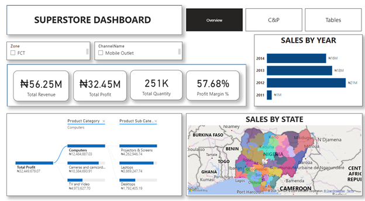

The aim of this project is to conduct a comprehensive analysis of the pizza dataset using MySQL.
The SQL functions employed include Aggregate, Window, Sub-query, CTE, and Joins.
For this analysis, we utilized the 2015 pizza dataset from Kaggle, which includes the following columns:

SQL window functions, also known as windowed or analytic functions, perform calculations across a set of table rows related to the current row within the result set. These functions use the OVER() clause to define the range of rows they operate on, providing great flexibility and making them a powerful tool for analytical queries.

The primary objective of this project is to analyze the sales performance of Superstore across various dimensions such as sales by state, product category, and sales channel.
This analysis aims to identify key trends, insights, and areas for improvement to drive strategic business decisions..

The drill-through feature in Power BI significantly enhances the interactive and exploratory capabilities of reports, benefiting both users and report developers.